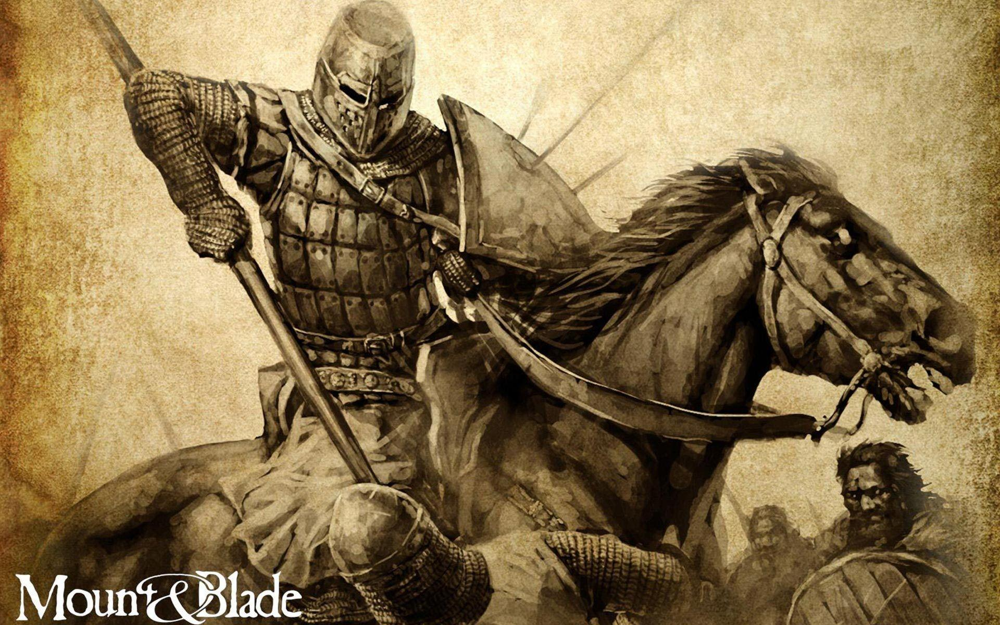
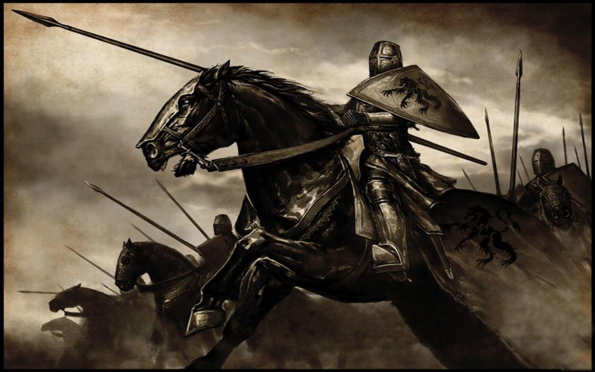
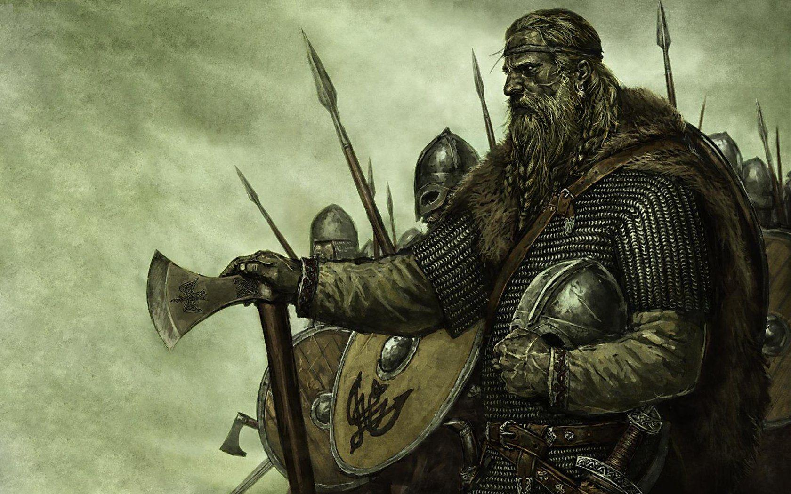
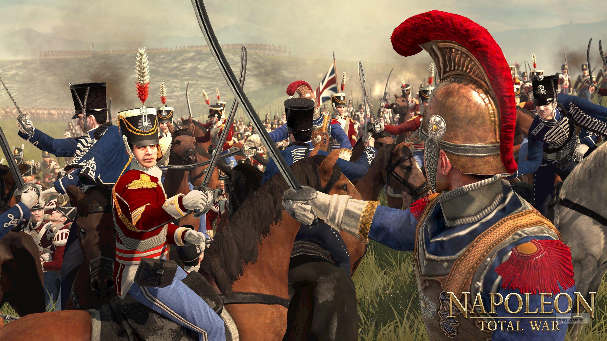
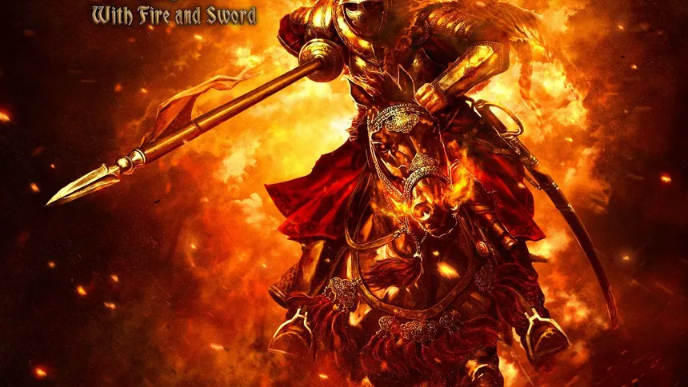
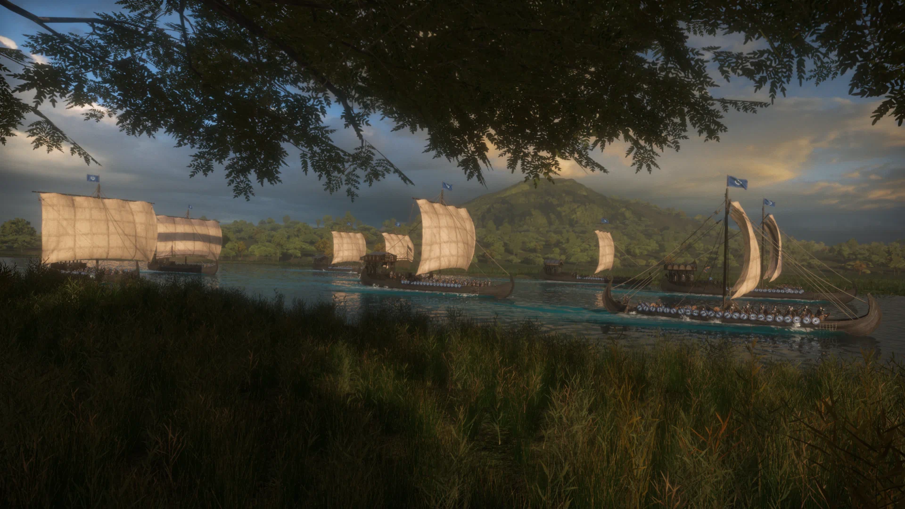

Mount & Blade es un videojuego de rol y acción ambientado en un mundo medieval ficticio llamado
Calradia, donde el jugador comienza como un aventurero sin renombre ni recursos. Desde una perspectiva
en tercera o primera persona, el juego combina combates en tiempo real con una profunda capa estratégica
y de gestión. El jugador puede recorrer libremente el mapa, comerciar, aceptar misiones, reclutar
soldados y mejorar sus habilidades, forjando su propio camino sin una narrativa lineal impuesta.
Uno
de sus rasgos más distintivos es el sistema de combate, especialmente a caballo, que prioriza la
precisión, la dirección de los ataques y el control manual de armas como espadas, lanzas y arcos. Las
batallas enfrentan a decenas de unidades en campos abiertos, donde la táctica y la composición del
ejército resultan claves para la victoria. Además, el jugador puede servir como mercenario, vasallo o
incluso enfrentarse a los distintos reinos que luchan por el control de Calradia.
Aunque gráficamente
sobrio, Mount & Blade destaca por su libertad, profundidad y capacidad de crear historias emergentes,
convirtiéndose en una experiencia única dentro del género medieval.


Mount & Blade: Warband es la secuela y evolución directa del título original, ampliando y
perfeccionando sus mecánicas principales. Ambientado nuevamente en el continente de Calradia, el juego
ofrece un mundo medieval abierto y dinámico en el que el jugador forja su destino desde cero, ya sea
como mercenario, comerciante, vasallo de un reino o monarca independiente. A diferencia de su
predecesor, Warband introduce una mayor profundidad política, permitiendo administrar feudos, participar
en intrigas diplomáticas y gestionar relaciones entre nobles y facciones.
El sistema de combate en
tiempo real sigue siendo uno de sus mayores atractivos, destacando especialmente las batallas a gran
escala y el combate montado, donde la habilidad del jugador y la táctica del ejército son determinantes.
Se añaden nuevas facciones, tipos de tropas y opciones estratégicas que enriquecen la experiencia
bélica. Además, el juego incorpora un modo multijugador, permitiendo enfrentamientos entre jugadores en
distintos modos competitivos.
Con mejoras gráficas, una interfaz más pulida y una comunidad activa de
mods, Mount & Blade: Warband se consolida como una experiencia medieval profunda, flexible y altamente
rejugable.

Mount & Blade: Warband – Napoleonic Wars es un contenido descargable centrado en las guerras
napoleónicas de principios del siglo XIX, alejándose del escenario medieval tradicional de la saga. El
DLC pone un fuerte énfasis en el combate multijugador, recreando batallas históricas a gran escala con
mosquetes, artillería, caballería y formaciones militares realistas. Los jugadores pueden unirse a
distintos ejércitos de la época, como Francia, Gran Bretaña, Prusia o Rusia, y participar en
enfrentamientos organizados que priorizan la coordinación y la disciplina. Las mecánicas de disparo
lento, recarga manual y combate cuerpo a cuerpo con bayonetas aportan un ritmo más táctico y tenso.
Aunque incluye un modo para un jugador más limitado, Napoleonic Wars destaca principalmente por su
experiencia multijugador cooperativa y competitiva, ofreciendo una representación detallada y
estratégica de la guerra napoleónica.
Mount & Blade: With Fire and Sword es otro DLC
independiente que traslada la acción al siglo XVII, inspirado en la novela A sangre y fuego de Henryk
Sienkiewicz. Ambientado en Europa del Este, el juego presenta nuevas facciones históricas como el Zarato
ruso, la Mancomunidad Polaco-Lituana y los cosacos. Introduce armas de fuego primitivas, como pistolas y
mosquetes, que conviven con espadas y sables, modificando la dinámica del combate. A diferencia de
Napoleonic Wars, este DLC se centra principalmente en el modo para un jugador, con una narrativa más
guiada, misiones específicas y un mundo político más estructurado. With Fire and Sword mantiene la
esencia de libertad y progresión de Warband, pero con un enfoque más histórico y narrativo.


Mount & Blade II: Bannerlord es la continuación directa de Warband y actúa como precuela
ambientada dos siglos antes, durante la caída de un gran imperio y el surgimiento de los reinos que
definirán Calradia. El juego amplía de forma notable la escala y profundidad de la saga, ofreciendo un
mundo medieval más vivo, detallado y reactivo. El jugador vuelve a comenzar como un personaje sin poder,
con total libertad para convertirse en guerrero, comerciante, líder político o fundador de su propio
reino.
El sistema de combate en tiempo real ha sido refinado, con animaciones más fluidas, físicas
mejoradas y batallas masivas que pueden incluir cientos de soldados simultáneamente. La gestión
estratégica también gana protagonismo, incorporando sistemas más complejos de economía, clanes,
herencia, diplomacia y asedios detallados. Las ciudades y castillos son ahora escenarios completamente
explorables, lo que aumenta la inmersión.
Con un apartado gráfico modernizado, mayor personalización
y un fuerte enfoque en las historias emergentes, Bannerlord representa la versión más ambiciosa y
profunda de la experiencia Mount & Blade.
Mount & Blade II: Bannerlord – War Sails es una expansión que amplía de forma significativa el
alcance de la saga al introducir, por primera vez, la navegación y el combate naval. Ambientado en el
mismo mundo de Calradia, el DLC incorpora nuevas regiones costeras e insulares inspiradas en culturas
nórdicas, junto con facciones especializadas en la guerra marítima y el saqueo. El jugador puede
comandar flotas, gestionar barcos y participar en batallas navales en tiempo real, donde influyen
factores como el viento, el abordaje y la coordinación entre tripulaciones.
War Sails no se limita al
combate en el mar, ya que integra estas nuevas mecánicas con los sistemas tradicionales de Bannerlord.
Las flotas pueden transportar ejércitos, apoyar invasiones costeras, bloquear rutas comerciales y
conectar el dominio naval con la estrategia terrestre. Además, se añaden nuevas tropas, equipamientos y
opciones tácticas que refuerzan la identidad de las facciones marítimas.
Con esta expansión, la saga
da un paso importante hacia una experiencia medieval más completa, combinando guerra terrestre y naval
dentro de un mismo mundo dinámico.
